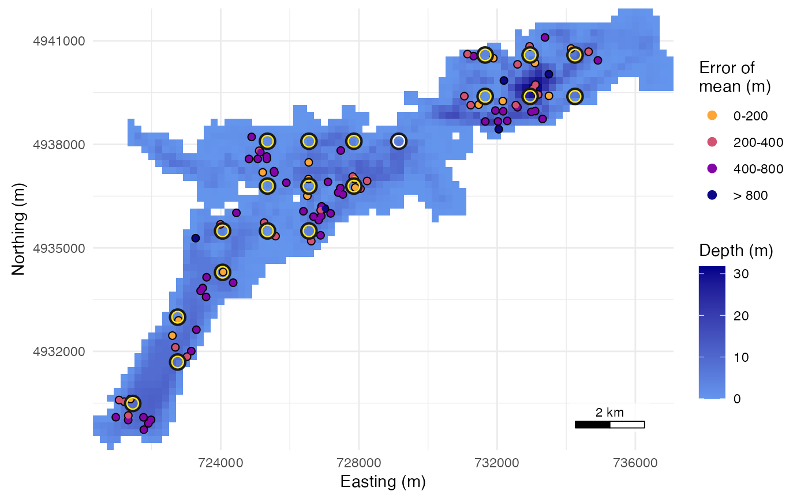

Score a receiver array by simulation
evaluate_array.RdScores a candidate array in one call. It builds the array's detection
field with detfield::water_distances() and detfield::de_field(),
simulates animals with simulate_tracks(), their transmissions with
simulate_transmissions() and the detections with
simulate_detections(), counts the detections per hour with
detfield::bin_detections(), computes a location surface for every
detected animal-hour with detfield::location_surface(), and scores the
surfaces against the true positions with score_surfaces(). The share of
the water the array covers is returned beside the score.
Usage
evaluate_array(
layout,
grid,
model,
n_animals = 20,
seed = NULL,
control = list()
)Arguments
- layout
The receivers: a
receiver_layoutfromplace_receivers(), or a data frame of coordinates thatplace_receivers(method = "manual")takes. A layout missing any of its columns is placed as coordinates.- grid
A terra::SpatRaster of water depth in metres,
NAon land, in a projected CRS whose unit is the metre and whose scale at the raster centre, on its two axes and its diagonals, is within 1 percent of 1, as inplace_receivers().- model
A
de_modelfromdetfield::de_model()ordetfield::de_logistic(): the detection model of the simulation.- n_animals
Number of simulated animals.
- seed
A seed, one number from -2147483647 to 2147483647 as
set.seed()takes, orNULL(the default) for the current random number stream. The seed is passed tosimulate_tracks(),simulate_transmissions()andsimulate_detections()in turn, as the arraydesignR app does, so the same seed gives the app's animals and detections. The caller's stream is restored after a seeded call. A fraction is truncated toward zero, asset.seed()does, soseed = 1.5gives the result ofseed = 1.- control
A list of settings; any not given take their defaults:
movement: amovement_model(); defaultcrw_model(30, 15, 40, time_step_s = 60), a correlated random walk with gamma steps of mean 30 m and standard deviation 15 m per 60 s (0.5 m/s) and turns of standard deviation 40 degrees, the walk ofvignette("movement-models"). No species was measured to set these values; set a walk for your species.hours: hours simulated per animal, from the hour; default 6. With the 20-receiver grid ofvignette("arraydesign")on the 100 m raster, and the range curve and tag delay of the example below, 20 animals over 6 hours took a median of 3.3 s under the binomial and 11.2 s at a station-hour standard deviation of 2.55 (10 runs each). The time depends on the machine and its load. Under the binomial most of the time goes to the distances through water of the detection field; with a station-hour standard deviation, to positioning, in proportion to the animal-hours scored.k: number of receivers a cell needs at a threshold to count as covered; default 1. Akabove the number of receivers warns, and every count is 0.tag_delay: the delay from the start of one transmission to the start of the next, in seconds, one number or the shortest and longest, passed tosimulate_transmissions()anddetfield::bin_detections(); defaultc(65, 185), a tag programmed at 60 to 180 s with a 5 s transmission.level: level of the credible regions; default 0.95.tag_model: the tag model to read frommodelandposition_modelwhen they hold several, one string passed todetfield::de_field(); defaultNULL, for a model with one curve.position_model: thede_modelused to position; defaultmodel. A model that gives every cell the same likelihood, such as one flat in distance, makes every bin degenerate: the call warns and scores none.thresholds: detection probabilities for the coverage table; defaultc(0.5, 0.8).start_time: POSIXct in UTC on the hour; default 2025-01-01 00:00.cores: processes fordetfield::location_surface(); default 1.likelihood: howdetfield::location_surface()reads the curve ofposition_model."binomial"(the default), binomial grid localization: the curve is the probability that each transmission is heard, so misses and silent receivers count."presence_only", presence-only grid localization: the product of the curve over the detections, with misses and silent receivers dropped. Its credible regions are not calibrated; they sharpen with the count of detections.
Value
A list of class array_evaluation: layout, the receivers;
coverage, the coverage table with k; score, a surface_score
whose overall row also holds n_animal_hours and scored_share;
field, the de_field of model; tracks; detections, the
sim_detections; surfaces, the location surfaces (NULL when nothing
was detected); settings, the control values used plus n_animals,
seed, the model sources and skipped, the degenerate bins left out; and
timing, seconds per step.
Details
What is scored. Only animal-hours with at least one detection get a
surface, so the errors and the hit rate describe the detected hours. The
score's overall row adds n_animal_hours, the animal-hours that hold a
transmission, and scored_share, the scored bins over them. On the
20-receiver grid of vignette("arraydesign") (20 animals x 6 hours,
seed 1), 77 of 120 animal-hours were scored; read the error of a sparse
array beside this share.
The detection model. Detections are simulated from model, and
positions are computed with control$position_model, which is model
unless given; pass a perturb_de_model() copy to see what a wrong range
model does. When a model has sigma$station_hour, the simulation draws one
logit-scale effect per receiver and UTC hour, normal with that standard
deviation and shared by every animal in the hour, and the positioning
integrates over it (overdispersion = "station_hour"). Without it the
simulation has no such effect and the positioning uses independent
binomials (overdispersion = "none"). With the same model on both sides
the 95% regions are calibrated by construction, apart from the movement
of an animal within the hour, which the likelihood does not model, and
the spread of the random delay around its mean, since the counts take the
mean number of transmissions. Both lower the hit rate. On the same
20-receiver grid with the binomial and a delay of 120 to 180 s, 200 animals over
24 hours gave 0.958 with still animals, 0.886 with a walk of 6 m a
minute, and 0.546 with the default movement, 30 m a minute, which carries
an animal well outside a 95% region within the hour. The script,
https://github.com/jakebrownscombe/arraydesign/blob/main/validation/03_stoney_details.R,
is in the repository and not in the installed package.
The hit rate measures movement within the hour. On Stoney, with 60
animals x 12 hours under the binomial, grids of 5, 10 and 20 receivers
gave 0.499, 0.550 and 0.561 with the default movement, and 0.979, 0.941
and 0.966 with still animals. One receiver scored 7 of 720 animal-hours,
too few to read. Compare designs on the error, the scored share and the
water covered. Use the hit rate to check that the
regions are calibrated, with still animals (crw_model(1e-6, 1e-6, 40))
when the design itself is the question.
The hit-rate interval needs hours. Its SE is clustered two ways, by
animal and by hour (bin start), and is never taken below the larger
one-way SE; score_surfaces() gives the formula, and the print names the
estimate used. The interval's degrees of freedom are the smaller cluster
count less one, so the default six hours give 5. On the same grid the 95%
interval left out the mean of 40 replicate runs at six hours in 0 of 40
under the binomial and 1 of 40 at a station-hour standard deviation of 1,
and the mean of 20 runs at 24 hours
in 0 of 20 at 1. The print notes when a station-hour effect meets fewer
than 20 hours. Use 24 hours or more for a calibration check.
Transmissions per hour. The simulation and the counts read the same
control$tag_delay, the start-to-start delay of simulate_transmissions()
and detfield::bin_detections(), so n matches the simulated
transmissions on average.
Coverage. With control$k = 1, coverage_summary(): water cells
where at least one receiver on its own detects a transmission with
probability at or above each threshold. The print adds the cells where the
array does, any receiver hearing: one less the product over the receivers
of the probability of a miss, the coverage of Pedersen et al. (2014). With
k above 1, cells where at least k receivers do, the case for
positioning.
Coverage is read from the field of model, the simulated truth.
References
Pedersen, M. W., Burgess, G. and Weng, K. C. (2014). A quantitative approach to static sensor network design. Methods in Ecology and Evolution, 5, 1043-1051. doi:10.1111/2041-210X.12255 (eqn 5: a cell's coverage is the chance that one or more receivers detect a transmission from it.)
Examples
# The 20 planned stations, the depth-dependent range curve, and 20 animals
# for 6 hours, as in the app's reference run. The depth raster is averaged
# to 200 m cells (1,345 water cells instead of 4,818), so the example runs
# in about a second; `hours` under `control` gives the time on 100 m cells.
stoney <- terra::rast(system.file("extdata", "stoney_depth.tif",
package = "arraydesign"))
stoney_200 <- terra::aggregate(stoney, 2, na.rm = TRUE)
planned <- read.csv(system.file("extdata", "planned_stations.csv",
package = "arraydesign"))
rx <- place_receivers(stoney_200, method = "manual", coords = planned)
range_model <- detfield::de_logistic(d50 = c(250, 750), d05 = c(500, 1500),
depth = c(1, 35))
ev <- evaluate_array(rx, stoney_200, range_model, n_animals = 20, seed = 1,
control = list(hours = 6, tag_delay = c(120, 180)))
ev
#> <array_evaluation> 20 receivers; 20 animals x 6 hours
#> simulated with: de_logistic, d50 250/750 m, d05 500/1500 m, depths 1/35 m
#> positioned by: binomial grid localization
#> cells at p >= 0.5 under one receiver alone: 157 of 1,345 (11.7%)
#> cells at p >= 0.8 under one receiver alone: 45 of 1,345 (3.3%)
#> cells at p >= 0.5 under the array, any receiver: 164 of 1,345 (12.2%)
#> cells at p >= 0.8 under the array, any receiver: 45 of 1,345 (3.3%)
#> <surface_score> 92 animal-bins of 19 animals; 95% credible regions
#> scored 92 of 120 animal-hours with transmissions (76.7%); hours with no
#> detection are not scored
#> error of the mode: median 391 m, 90th percentile 996 m
#> error of the mean: median 420 m, 90th percentile 736 m
#> hit rate 0.531: share of the truth inside the 95% regions (a calibration
#> check)
#> 95% interval 0.429 to 0.633 (SE 0.040 clustered by animal, the one-way
#> floor; 19 animals and 6 bin starts; t with 5 df); regions hold 0.958
#> on average
#> median region 560,000 m^2
#> 0.8 s: field 0.5, simulate 0.2, position 0.1, score 0.0
plot(ev)

# Positioning with a shorter range than the truth: see ?perturb_de_model.